ULTIMATE FOUNTAIN PEN ENCYCLOPEDIA
從文具控到鋼筆控～這些那些鋼筆知識百科
從萬寶龍到你手上的那張紙，就是我的天地
從文具控到鋼筆控～這些那些鋼筆知識百科
點擊卡片展開章節說明鋼筆知識鋼筆基礎總論：原理、比較與定位。
基礎原理比較定位
進入「概述」→ 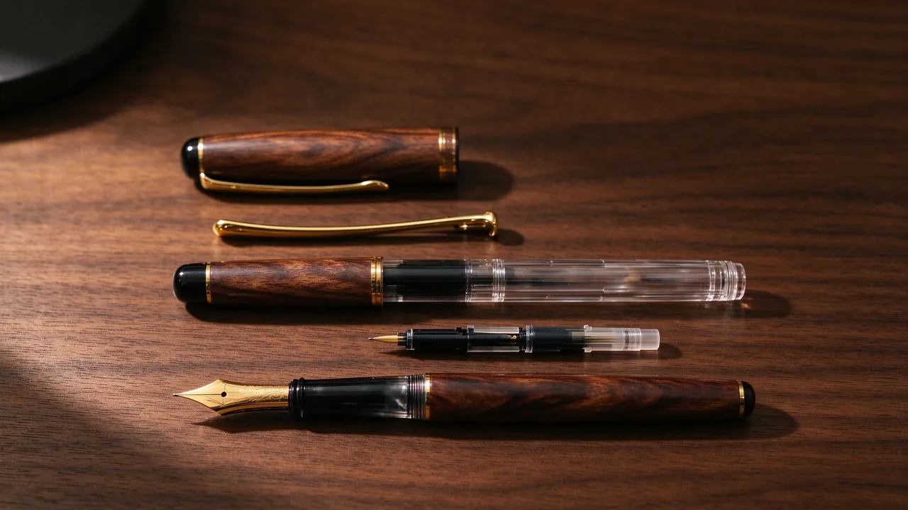
鋼筆知識鋼筆零件與機構解析。
外觀部件內部機構蓋合機構故障診斷
進入「結構」→ 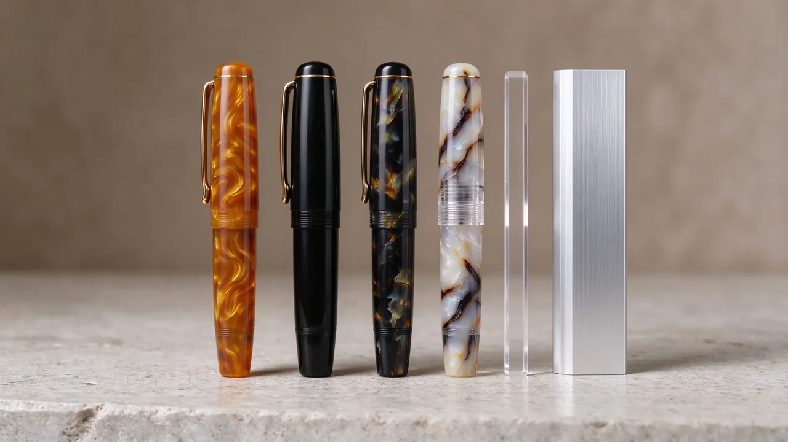
鋼筆知識筆桿、筆尖與密封材料全解析。
筆桿材質筆尖材質密封零件
進入「材質」→ 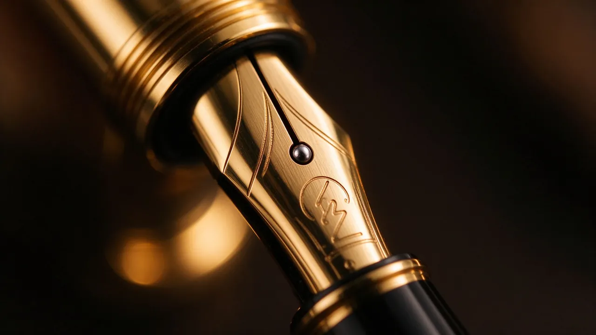
鋼筆知識銥尖、打磨與書寫手感。
尺寸規格銥粒打磨彈性尖問題調校
進入「筆尖」→ 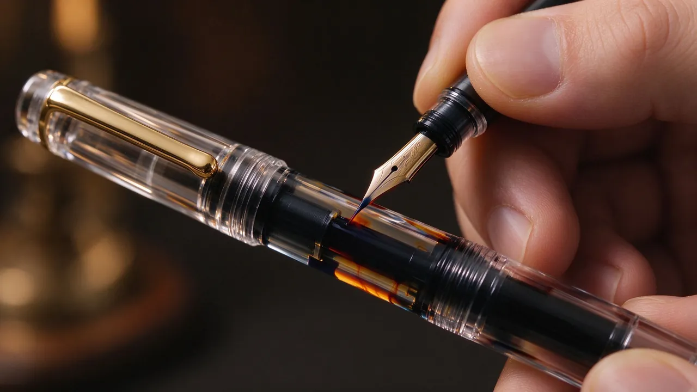
鋼筆知識上墨系統全解析。
吸墨器卡式墨水管特殊系統比較與清潔
進入「上墨」→ 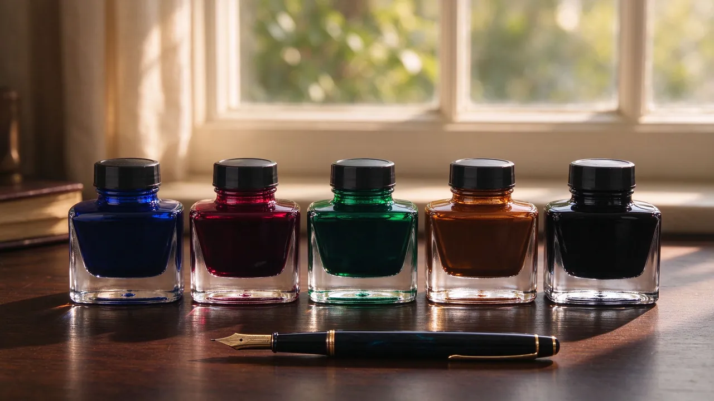
鋼筆知識墨水種類、化學、堵筆與保養。
墨水種類屬性問題與儲存品牌
進入「墨水」→ 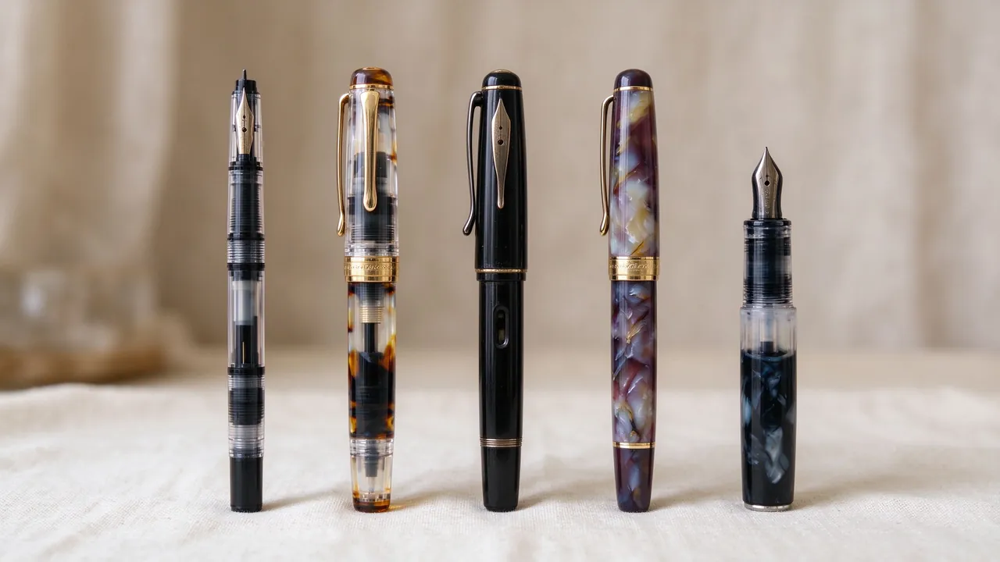
鋼筆知識鋼筆類型與使用場景。
依定位依形式特殊類型
進入「分類」→ 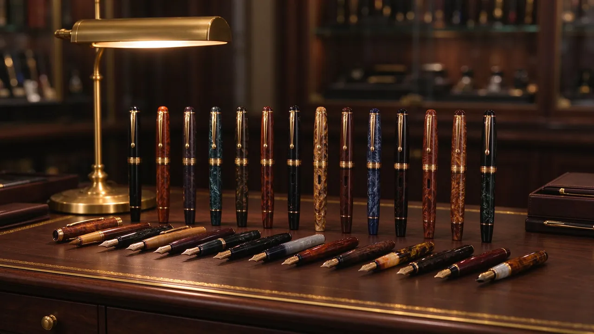
國際、日系、臺灣與國產品牌。
歐美品牌日系品牌臺灣與國產
進入「品牌」→挑筆指南、預算對照與避坑。
依書寫習慣依預算二手避坑
進入「選購」→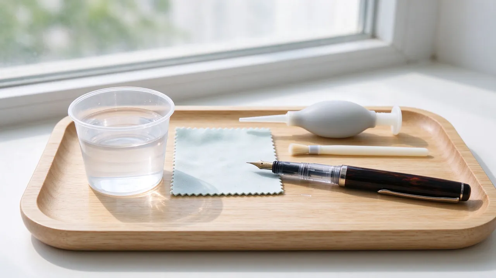
清潔、維修與長期保存。
清潔問題處理零件維修保存
進入「保養」→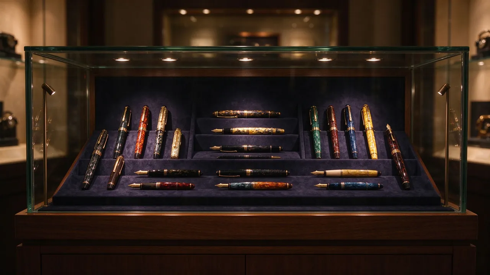
價值、品相與鑑定。
品相價值鑑定與保存
進入「藏家交流」→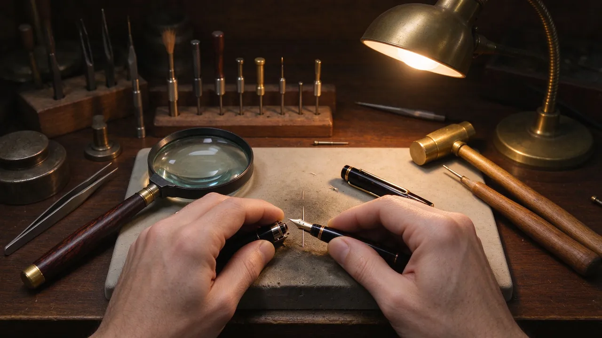
改尖、改上墨與維修手作。
準備筆尖作業上墨維修風險
進入「DIY」→索引工具鋼筆術語辭典（A–Z 中英對照）。
核心術語行話縮寫
進入「詞彙」→ 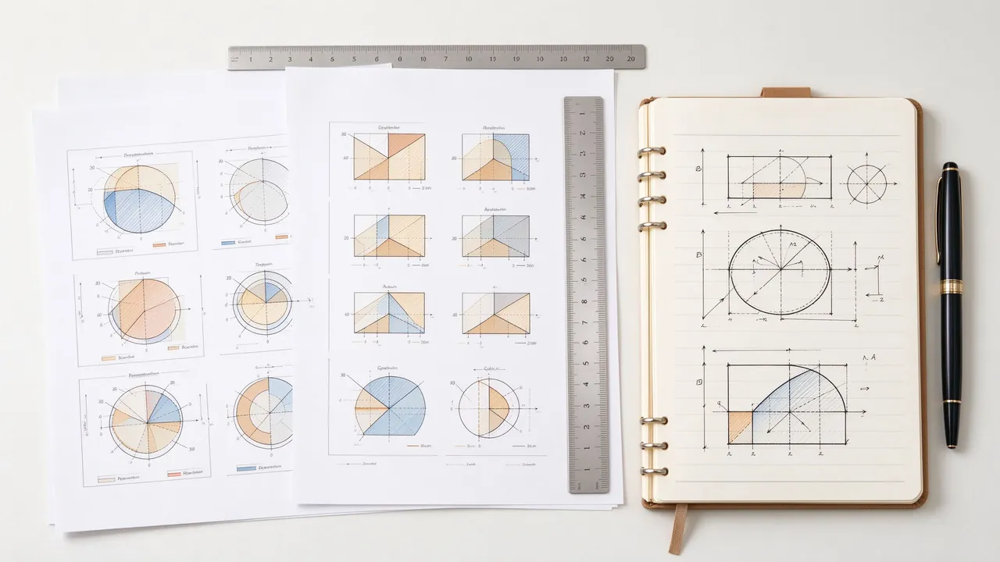
索引工具表格、檢查清單與參考資源。
對照表資源
進入「附錄」→ 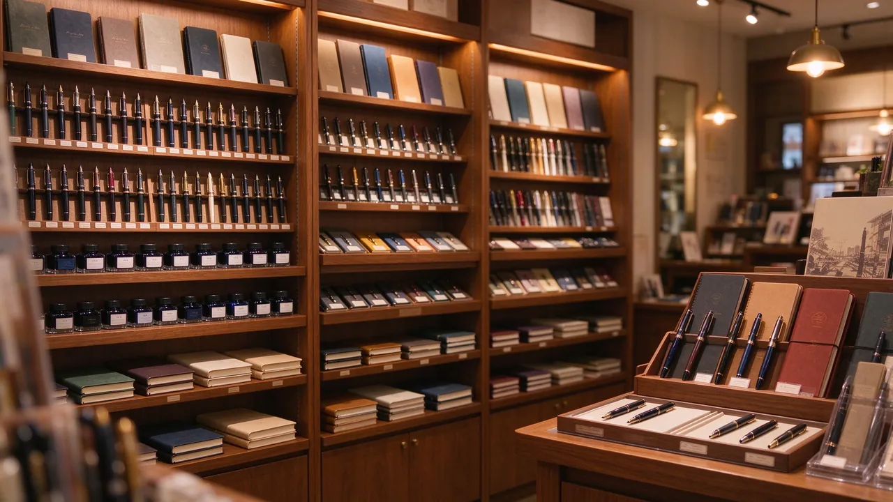
關於本站與品牌介紹。
關於i文具控
進入「i文具控」→